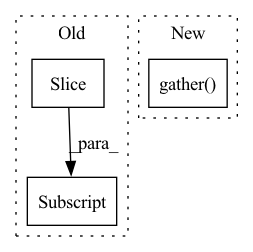

Pattern ID :1923

Before Change
images_mix = (
images * images_mix_weight + images[::-1] * (1. - images_mix_weight))
mix_weight = tf.cast(mix_weight, labels.dtype)
labels_mix = labels * mix_weight + labels[::-1] * (1. - mix_weight)
return images_mix, labels_mix
After Change
images * images_mix_weight + tf.gather(images, mixup_index) *
(1. - images_mix_weight))
mix_weight = tf.cast(mix_weight, labels.dtype)
labels_mix = labels * mix_weight + tf.gather(labels,
mixup_index) * (1. - mix_weight)
return images_mix, labels_mix
In pattern: SUPERPATTERN
Frequency: 3
Non-data size: 3
Instances
Fragment ID: 8589921
Project Name: google/uncertainty-baselines
Commit Name: 3ed3e53e9a864079f5d68cf4bbdf4089d65ac046
Time: 2020-11-19
Author: rjenatton@google.com
File Name: baselines/imagenet/utils.py
M Class Name: AnonimousClass
N Class Name: AnonimousClass
M Method Name: mixup(7)
N Method Name: mixup(4)
M Parent Class:
N Parent Class:
M File Name: baselines/imagenet/utils.py
N File Name: baselines/imagenet/utils.py
M Start Line: 510
M End Line: 519
N Start Line: 517
N End Line: 564
'>
Before Change
images = images - pad_crops + pad_crops[::-1]
labels = tf.cast(labels, "float32")
labels = labels * mix_weight + labels[::-1] * (1.0 - mix_weight)
return images, labels
After Change
pad_crops = tf.image.pad_to_bounding_box(crops, offset_height, offset_width, hh, ww)
shuffle_index = tf.random.shuffle(tf.range(batch_size))
images = images - pad_crops + tf.gather(pad_crops, shuffle_index)
labels = tf.cast(labels, "float32")
labels = labels * mix_weight + tf.gather(labels, shuffle_index) * (1.0 - mix_weight)
return images, labels
'>
Fragment ID: 8589920
Project Name: leondgarse/keras_cv_attention_models
Commit Name: 0be6cd7db074d152b4d1096fff5a1d062a9c52ff
Time: 2021-12-12
Author: leondgarse@gmail.com
File Name: keras_cv_attention_models/imagenet/data.py
M Class Name: AnonimousClass
N Class Name: AnonimousClass
M Method Name: cutmix(4)
N Method Name: cutmix(3)
M Parent Class:
N Parent Class:
M File Name: keras_cv_attention_models/imagenet/data.py
N File Name: keras_cv_attention_models/imagenet/data.py
M Start Line: 319
M End Line: 323
N Start Line: 277
N End Line: 307
'>
Before Change
weights: torch.FloatTensor = grad.mean(axis=-1, keepdim=True).mean(axis=-1, keepdim=True) // (N,C,1,1)
heatmap: torch.FloatTensor = (feats * weights).sum(dim=1).clamp(0) // (N,H,W)
heatmap = np.array(heatmap.cpu())
heatmap = cv2.resize(heatmap[0], _input.shape[2:])
heatmap = heatmap - np.min(heatmap)
heatmap = heatmap / np.max(heatmap)
After Change
_output: torch.FloatTensor = self._model.pool(feats)
_output: torch.FloatTensor = self._model.flatten(_output)
_output: torch.FloatTensor = self._model.classifier(_output)
_output: torch.FloatTensor = _output.gather(dim=1, index=_class.unsqueeze(1)).sum()
grad: torch.FloatTensor = torch.autograd.grad(_output, feats)[0] // (N,C,H,W)
feats.requires_grad_(False)
'>
Fragment ID: 8589908
Project Name: ain-soph/trojanzoo
Commit Name: 2bf7c2a2e8acba2592ee17d60d1a59b7bd1bbfe5
Time: 2020-11-24
Author: ain-soph@live.com
File Name: trojanzoo/model/imagemodel.py
M Class Name: ImageModel
N Class Name: ImageModel
M Method Name: grad_cam(3)
N Method Name: grad_cam(3)
M Parent Class: Model
N Parent Class: Model
M File Name: trojanzoo/model/imagemodel.py
N File Name: trojanzoo/model/imagemodel.py
M Start Line: 206
M End Line: 222
N Start Line: 190
N End Line: 212